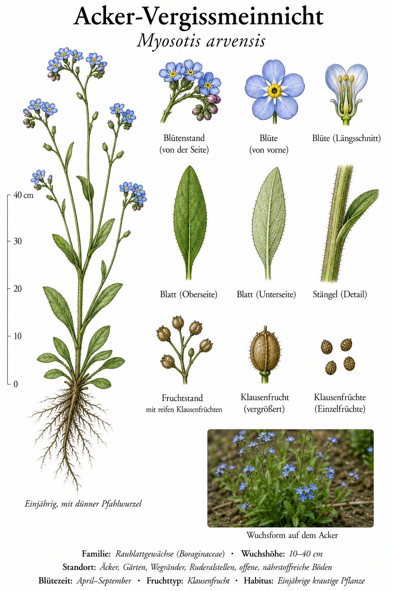
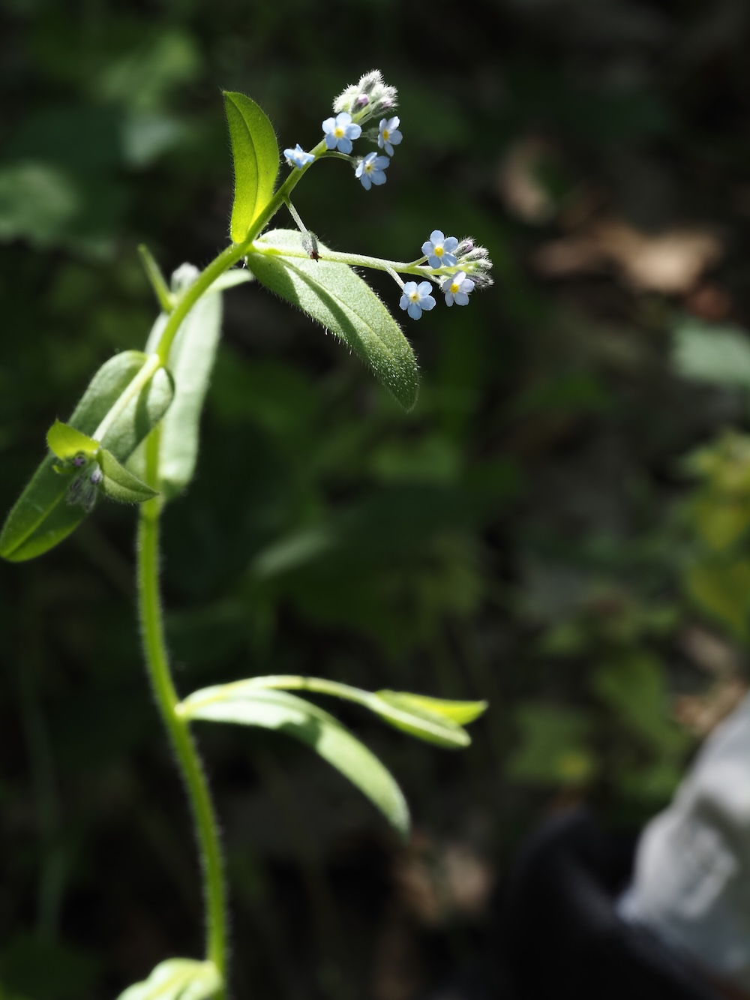
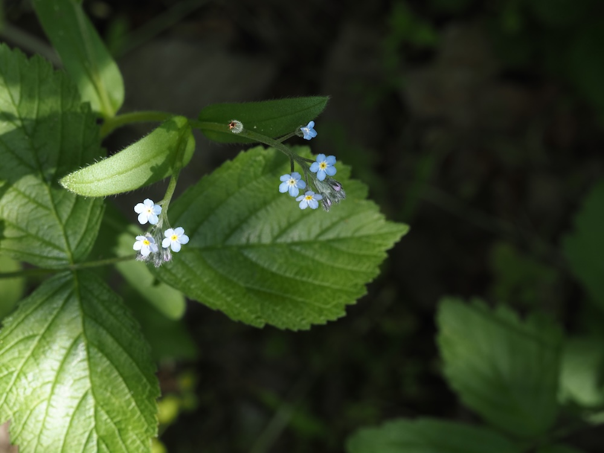

Das kleine, häufige Vergissmeinnicht — wie der bekannte Verwandte, aber ohne Pomp.



Der bescheidene Bruder
Während das berühmte Sumpf-Vergissmeinnicht (M. scorpioides) große, kräftige Blüten und feuchte Standorte braucht, ist das Acker-Vergissmeinnicht klein, bescheiden und überall: Äcker, Wegränder, Gärten. Die Blüten sind nur 3–5 mm groß — winzig im Vergleich. Aber genauso schön: dieses unverwechselbare Himmelblau mit gelbem Schlund.
Klett-Samen wie Schweine-Kletten
Nach der Blüte bildet sich die typische „Wickel“ aus kleinen Klausen-Früchten, die mit Häkchen besetzt sind — sie heften sich an Tierfell und Hosen. So wird das Acker-Vergissmeinnicht über Feldwege und Wiesenwege verbreitet. Eine geniale Verbreitungsstrategie ohne Wind oder Fluginsekten.
Wissenswertes & Merksätze
Erkennen leicht gemacht
Niedrige (10–30 cm) Pflanze mit aufrechtem, behaartem Stängel. Blätter wechselständig, lanzettlich, behaart. Blüten klein (3–5 mm), himmelblau mit gelbem Schlund, in einseitswendigen „Wickeln“ am Stängelende. Knospen oft rosa-rötlich (Farbwechsel beim Aufblühen).
Unterscheidung zu anderen Vergissmeinnichten
Wesentliche Arten in Deutschland: M. scorpioides (Sumpf-Vergissmeinnicht — größer, feuchte Standorte), M. arvensis (Acker — klein, häufig), M. sylvatica (Wald — mittel, schattige Standorte). Plus weitere kleine Arten. Mit dem Habitat kommt man oft schon weit.